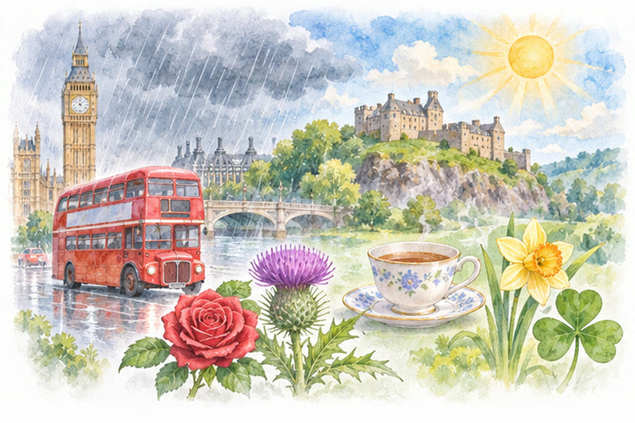

Listen to the text
Speed:

FACT FILE: THE UNITED KINGDOM Full name: the United Kingdom of Great Britain and Northern Ireland. Location: islands in the north-west of Europe. The country is washed by the Atlantic Ocean, the North Sea and the Irish Sea. Parts: four countries. They are England, Scotland, Wales and Northern Ireland. Each has its own capital, traditions and symbols. Capital: London, which stands on the River Thames. Population: almost seventy million people. Government: a constitutional monarchy. The head of state is the king, but the country is governed by the parliament and the prime minister. Languages: English. Welsh is also official in Wales, and you can hear Scottish Gaelic and Irish too. Money: the pound. Highest mountain: Ben Nevis in Scotland. Climate: mild and wet. It rarely gets very hot or very cold. People joke that you can have four seasons in one day. Symbols: the rose for England, the thistle for Scotland, the daffodil and the leek for Wales, and the shamrock for Northern Ireland. Known for: Shakespeare, the Beatles, football, afternoon tea, red buses, castles and queues. Interesting facts: The British drive on the left. The London Underground is the oldest in the world. It was opened in 1863. And there is no place in Britain that is more than about 120 kilometres from the sea. Our teacher asked us to write the same kind of fact file about the USA, Canada, Australia or New Zealand. I chose Australia. The hardest part was "interesting facts". There were too many: an animal that jumps, an animal that sleeps twenty hours a day and a rock that changes colour.
Tap any sentence to hear it again.
Сподобалось? На сайті ще більше матеріалів для вчителів!
Reader, презентації, ігри, діагностичні та контрольні роботи до підручників 1-11 класів.
Перейти на сайт materials.allaenglish.com